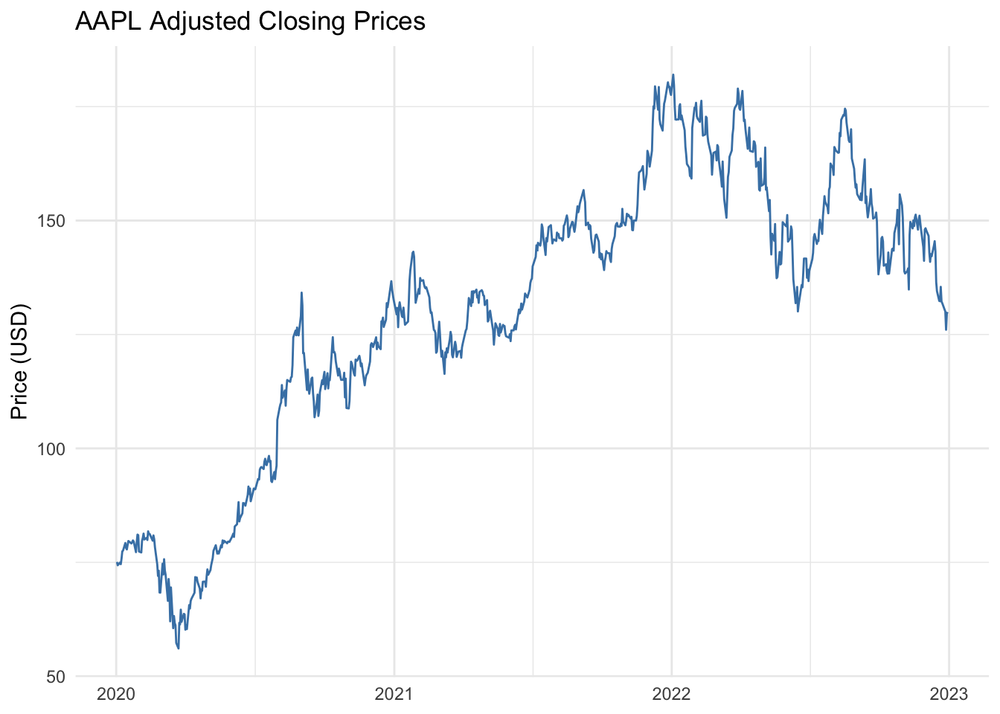
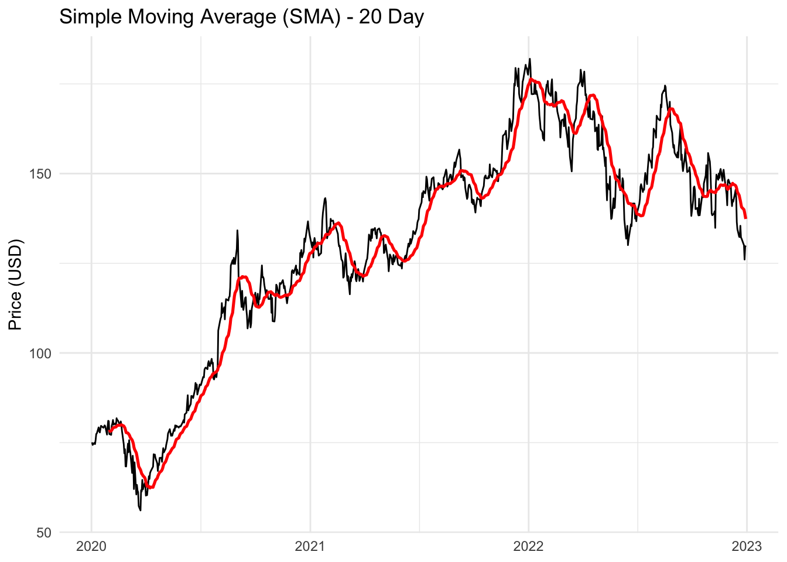
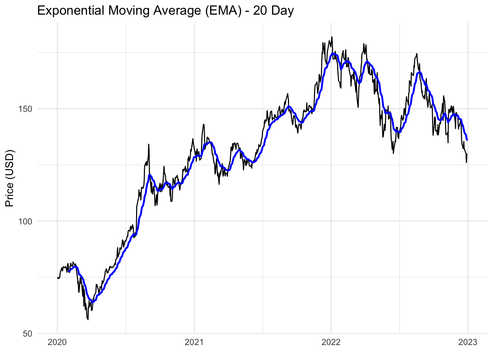
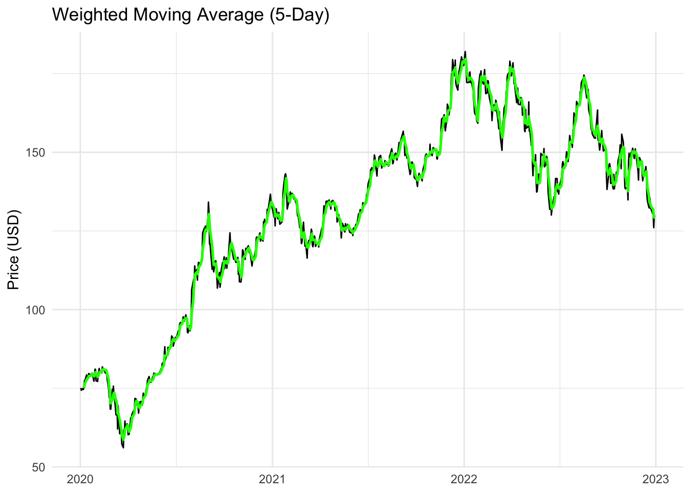
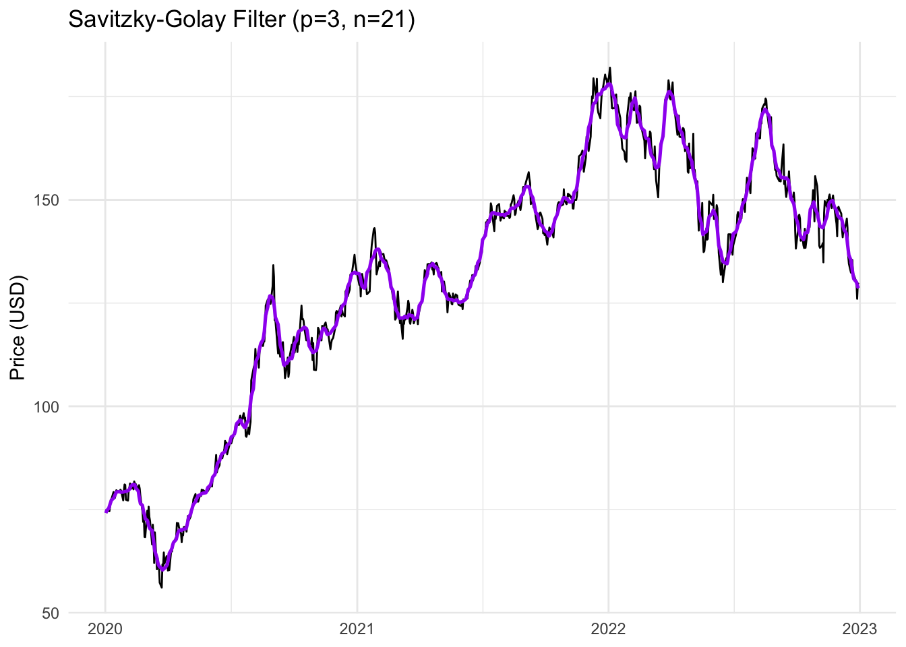
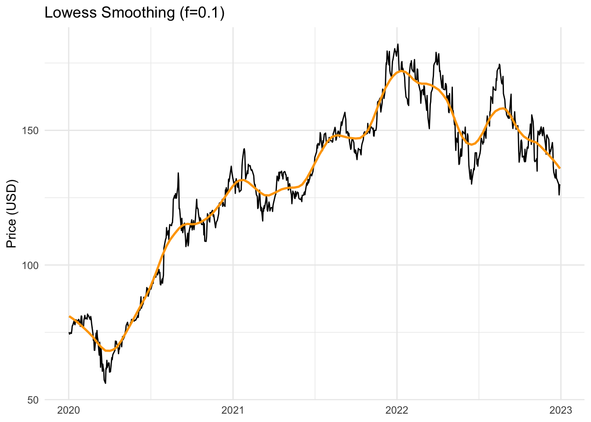
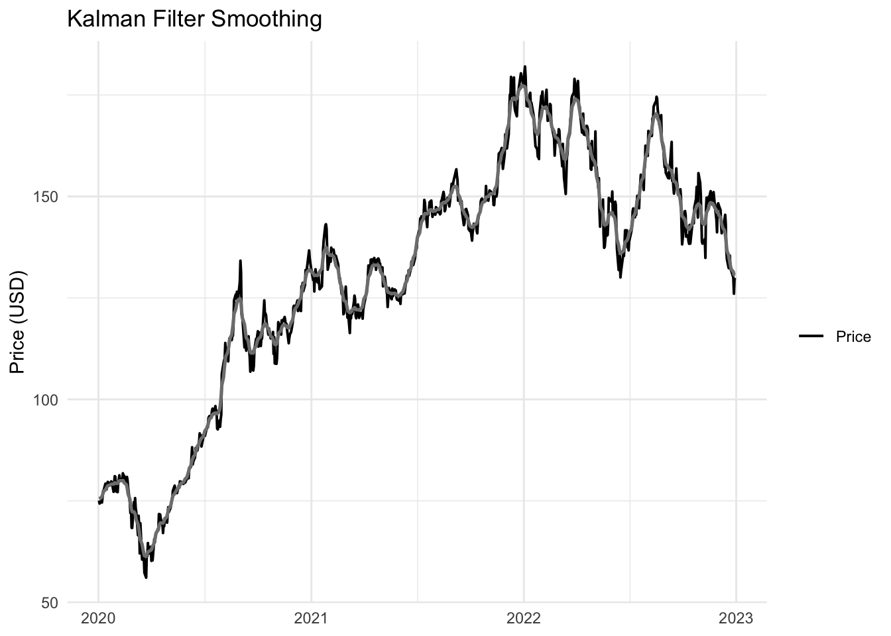
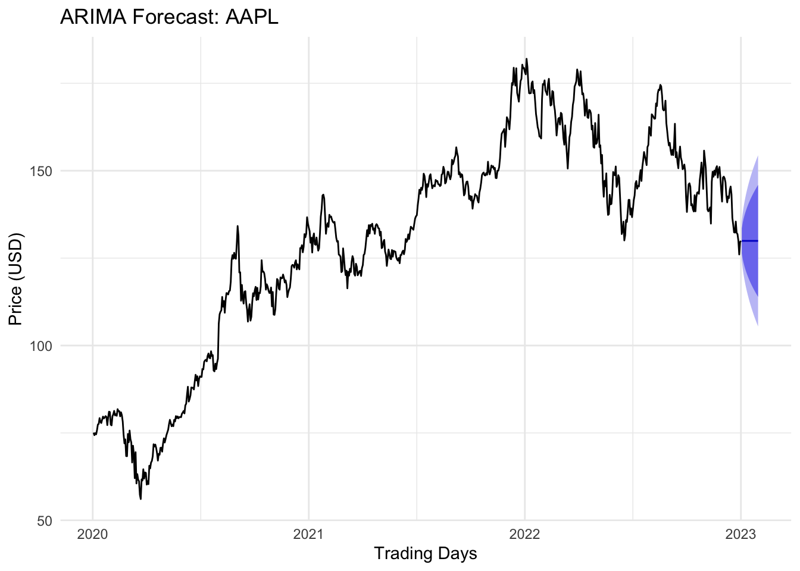

Code
getSymbols("AAPL", from = "2020-01-01", to = "2022-12-31", auto.assign = TRUE)[1] "AAPL"In this tutorial, you’ll learn to:
We will use Apple Inc. (AAPL) daily adjusted closing prices from Yahoo Finance.
Why Smoothing?
Why Forecasting?
getSymbols("AAPL", from = "2020-01-01", to = "2022-12-31", auto.assign = TRUE)[1] "AAPL"aapl_prices <- Cl(AAPL)
# View data
head(aapl_prices) AAPL.Close
2020-01-02 75.0875
2020-01-03 74.3575
2020-01-06 74.9500
2020-01-07 74.5975
2020-01-08 75.7975
2020-01-09 77.4075aapl_df <- tibble(
date = index(aapl_prices),
price = as.numeric(aapl_prices)
)
ggplot(aapl_df, aes(x = date, y = price)) +
geom_line(color="steelblue") +
labs(title="AAPL Adjusted Closing Prices", x=NULL, y="Price (USD)") +
theme_minimal()
sma_20 <- SMA(aapl_prices, n = 20)
df_sma <- tibble(
date = index(aapl_prices),
price = as.numeric(aapl_prices),
sma20 = as.numeric(sma_20)
)
ggplot(df_sma, aes(x=date)) +
geom_line(aes(y=price), color="black") +
geom_line(aes(y=sma20), color="red", size=0.9) +
labs(title="Simple Moving Average (SMA) - 20 Day", x=NULL, y="Price (USD)") +
theme_minimal()
Question: How does the SMA compare in volatility reduction?
ema_20 <- EMA(aapl_prices, n=20)
df_ema <- tibble(
date = index(aapl_prices),
price = as.numeric(aapl_prices),
ema20 = as.numeric(ema_20)
)
ggplot(df_ema, aes(x=date)) +
geom_line(aes(y=price), color="black") +
geom_line(aes(y=ema20), color="blue", size=0.9) +
labs(title="Exponential Moving Average (EMA) - 20 Day", x=NULL, y="Price (USD)") +
theme_minimal()
weights <- c(1,2,3,4,5)
weights <- weights/sum(weights)
wma_5 <- WMA(aapl_prices, n=5, wts=weights)
df_wma <- tibble(
date = index(aapl_prices),
price = as.numeric(aapl_prices),
wma_5 = as.numeric(wma_5)
)
ggplot(df_wma, aes(x=date)) +
geom_line(aes(y=price), color="black") +
geom_line(aes(y=wma_5), color="green", size=0.9) +
labs(title="Weighted Moving Average (5-Day)", x=NULL, y="Price (USD)") +
theme_minimal()
sg_filter <- sgolayfilt(as.numeric(aapl_prices), p=3, n=21)
df_sg <- tibble(
date = index(aapl_prices),
price = as.numeric(aapl_prices),
sg = as.numeric(sg_filter)
)
ggplot(df_sg, aes(x=date)) +
geom_line(aes(y=price), color="black") +
geom_line(aes(y=sg), color="purple", size=0.9) +
labs(title="Savitzky-Golay Filter (p=3, n=21)", x=NULL, y="Price (USD)") +
theme_minimal()
df_lo_in <- tibble(
x = as.numeric(index(aapl_prices)),
y = as.numeric(aapl_prices)
)
lo_out <- lowess(df_lo_in$x, df_lo_in$y, f=0.1)
df_lo <- tibble(
date = as.Date(df_lo_in$x, origin="1970-01-01"),
price = df_lo_in$y,
lo = lo_out$y
)
ggplot(df_lo, aes(x=date)) +
geom_line(aes(y=price), color="black") +
geom_line(aes(y=lo), color="orange", size=0.9) +
labs(title="Lowess Smoothing (f=0.1)", x=NULL, y="Price (USD)") +
theme_minimal()
mod_poly <- dlmModPoly(order=1, dV=15100, dW=1470)
kf_smooth <- dlmSmooth(as.numeric(aapl_prices), mod_poly)
df_kf <- tibble(
date = index(aapl_prices),
price = as.numeric(aapl_prices),
kalman = dropFirst(kf_smooth$s)
)
ggplot(df_kf, aes(x=date)) +
geom_line(aes(y=price, color="Price"), size=0.7) +
geom_line(aes(y=kalman, color="blue"), size=0.9) +
labs(title="Kalman Filter Smoothing", x=NULL, y="Price (USD)") +
scale_color_manual(name="", values=c("Price"="black","Kalman"="blue")) +
theme_minimal()
aapl_ts <- ts(as.numeric(aapl_prices), frequency = 252, start = c(2020, as.numeric(format(start(aapl_prices), "%j"))))fit_arima <- auto.arima(aapl_ts)
summary(fit_arima)Series: aapl_ts
ARIMA(0,1,0)
sigma^2 = 7.798: log likelihood = -1846.63
AIC=3695.26 AICc=3695.26 BIC=3699.88
Training set error measures:
ME RMSE MAE MPE MAPE MASE
Training set 0.0726423 2.790626 2.074084 0.04565066 1.664307 0.06149399
ACF1
Training set -0.06167857future_fc <- forecast(fit_arima, h=20)
autoplot(future_fc) +
labs(title="ARIMA Forecast: AAPL", x="Trading Days", y="Price (USD)") +
theme_minimal()